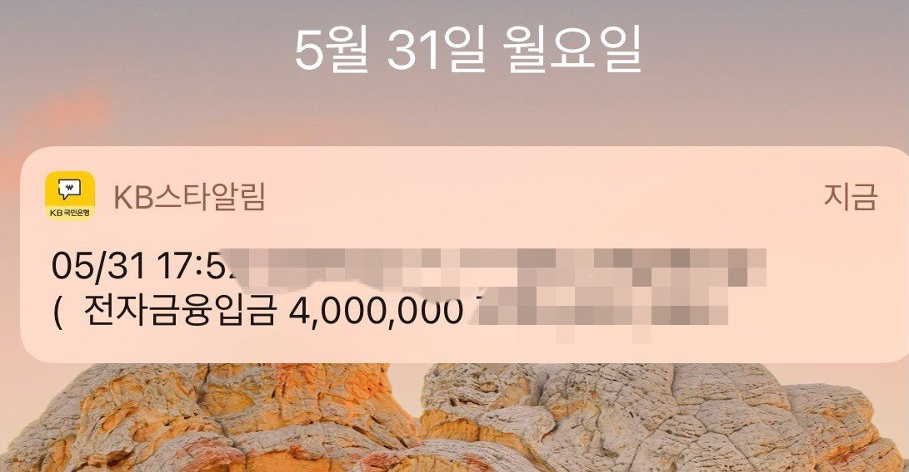

[직장인대출] 강민정 상담사 덕분에 대출 받았습니다
재직형태 :4대 보험되는 직장인입니다
재직기간: 5개월
사대보험 :유
소득 : 연2200
신용등급 : 나이스 740 올크 560
채무내역 많음 전세대출 7000 , 신용대출
정부지원 포함 3000 넘음 ㅠ
이러한 악조건 사항이었습니다 대출이
더이상 나올것도 없었고 결국 대부쪽도
대부분이 기대출 과다로 부결을 당했습니다
그러나 강민정 상담사님은 포기하시지 않고
저를 더욱더 다독여주시면서 마지막 한곳이
남았으니 조금만 더 기다려보자 하고
심사가 너무 길어지자 더욱더 불안한 저의 마음을 잘 헤아려 주셨고 그결과 한 금융사에서 400만원 대출
승인이 나서 정말 다행이었습니다 왜 뱅크앤론에서
대출을 진행해야 하는지
알거 같았고 상담사 분들이 전문적인 지식과 친절하게
상담을 도와주셔서 정말로 대출 승인동안 힘이
났습니다. 심사 전화 받는법 부터 상세하게
잘 알려주셨고 그결과 결국 승인을 해냈습니다
다시한번 고개숙여 좋은결과내준 강민정
상담사님께 감사드립니다
